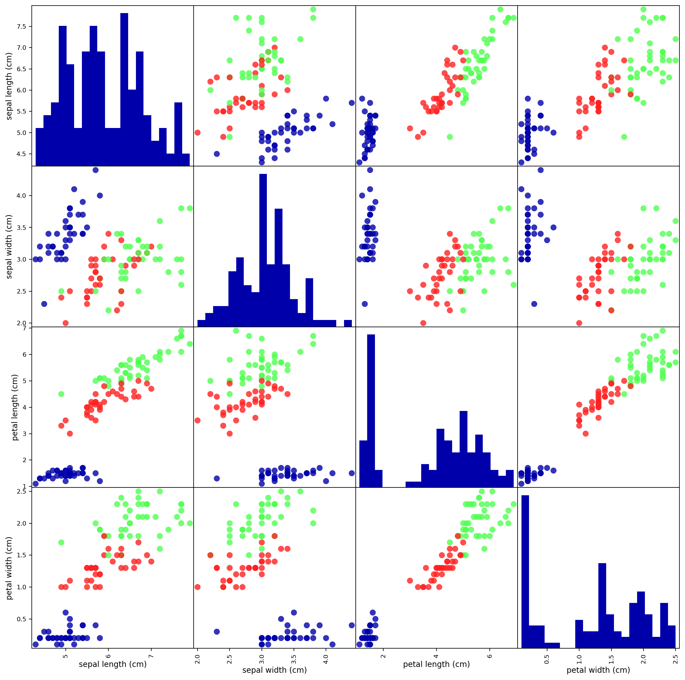

import sklearn
from preamble import *소개(Overview)
소개(Overview)
붓꽃의 품종 분류
데이터 적재
from sklearn.datasets import load_iris
iris_dataset = load_iris()print("iris_dataset의 키:\n", iris_dataset.keys())iris_dataset의 키:
dict_keys(['data', 'target', 'frame', 'target_names', 'DESCR', 'feature_names', 'filename', 'data_module'])print(iris_dataset['DESCR'][:193] + "\n...").. _iris_dataset:
Iris plants dataset
--------------------
**Data Set Characteristics:**
:Number of Instances: 150 (50 in each of three classes)
:Number of Attributes: 4 numeric, pre
...print("타깃의 이름:", iris_dataset['target_names'])타깃의 이름: ['setosa' 'versicolor' 'virginica']print("특성의 이름:\n", iris_dataset['feature_names'])특성의 이름:
['sepal length (cm)', 'sepal width (cm)', 'petal length (cm)', 'petal width (cm)']print("data의 타입:", type(iris_dataset['data']))data의 타입: <class 'numpy.ndarray'>print("data의 크기:", iris_dataset['data'].shape)data의 크기: (150, 4)print("data의 처음 다섯 행:\n", iris_dataset['data'][:5])data의 처음 다섯 행:
[[5.1 3.5 1.4 0.2]
[4.9 3. 1.4 0.2]
[4.7 3.2 1.3 0.2]
[4.6 3.1 1.5 0.2]
[5. 3.6 1.4 0.2]]print("target의 타입:", type(iris_dataset['target']))target의 타입: <class 'numpy.ndarray'>print("target의 크기:", iris_dataset['target'].shape)target의 크기: (150,)print("타깃:\n", iris_dataset['target'])타깃:
[0 0 0 0 0 0 0 0 0 0 0 0 0 0 0 0 0 0 0 0 0 0 0 0 0 0 0 0 0 0 0 0 0 0 0 0 0
0 0 0 0 0 0 0 0 0 0 0 0 0 1 1 1 1 1 1 1 1 1 1 1 1 1 1 1 1 1 1 1 1 1 1 1 1
1 1 1 1 1 1 1 1 1 1 1 1 1 1 1 1 1 1 1 1 1 1 1 1 1 1 2 2 2 2 2 2 2 2 2 2 2
2 2 2 2 2 2 2 2 2 2 2 2 2 2 2 2 2 2 2 2 2 2 2 2 2 2 2 2 2 2 2 2 2 2 2 2 2
2 2]데이터 나누기
from sklearn.model_selection import train_test_split
X_train, X_test, y_train, y_test = train_test_split(
iris_dataset['data'], iris_dataset['target'], random_state=0)print("X_train 크기:", X_train.shape)
print("y_train 크기:", y_train.shape)X_train 크기: (112, 4)
y_train 크기: (112,)print("X_test 크기:", X_test.shape)
print("y_test 크기:", y_test.shape)X_test 크기: (38, 4)
y_test 크기: (38,)데이터 살펴보기
# X_train 데이터를 사용해서 데이터프레임을 만듭니다.
# 열의 이름은 iris_dataset.feature_names에 있는 문자열을 사용합니다.
iris_dataframe = pd.DataFrame(X_train, columns=iris_dataset.feature_names)
# 데이터프레임을 사용해 y_train에 따라 색으로 구분된 산점도 행렬을 만듭니다.
pd.plotting.scatter_matrix(iris_dataframe, c=y_train, figsize=(15, 15), marker='o',
hist_kwds={'bins': 20}, s=60, alpha=.8, cmap=mglearn.cm3)
plt.show() # 책에는 없음
머신 러닝 모델: k-최근접 이웃
from sklearn.neighbors import KNeighborsClassifier
knn = KNeighborsClassifier(n_neighbors=1)knn.fit(X_train, y_train)KNeighborsClassifier(n_neighbors=1)In a Jupyter environment, please rerun this cell to show the HTML representation or trust the notebook.
On GitHub, the HTML representation is unable to render, please try loading this page with nbviewer.org.
KNeighborsClassifier(n_neighbors=1)
모델 평가하기
y_pred = knn.predict(X_test)
print("테스트 세트에 대한 예측값:\n", y_pred)테스트 세트에 대한 예측값:
[2 1 0 2 0 2 0 1 1 1 2 1 1 1 1 0 1 1 0 0 2 1 0 0 2 0 0 1 1 0 2 1 0 2 2 1 0
2]print("테스트 세트의 정확도: {:.2f}".format(np.mean(y_pred == y_test)))테스트 세트의 정확도: 0.97print("테스트 세트의 정확도: {:.2f}".format(knn.score(X_test, y_test)))테스트 세트의 정확도: 0.97